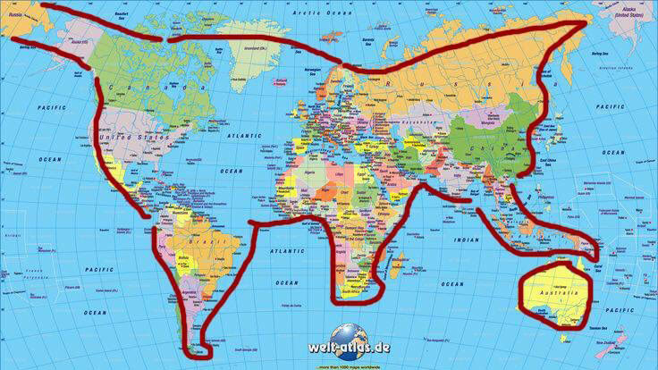
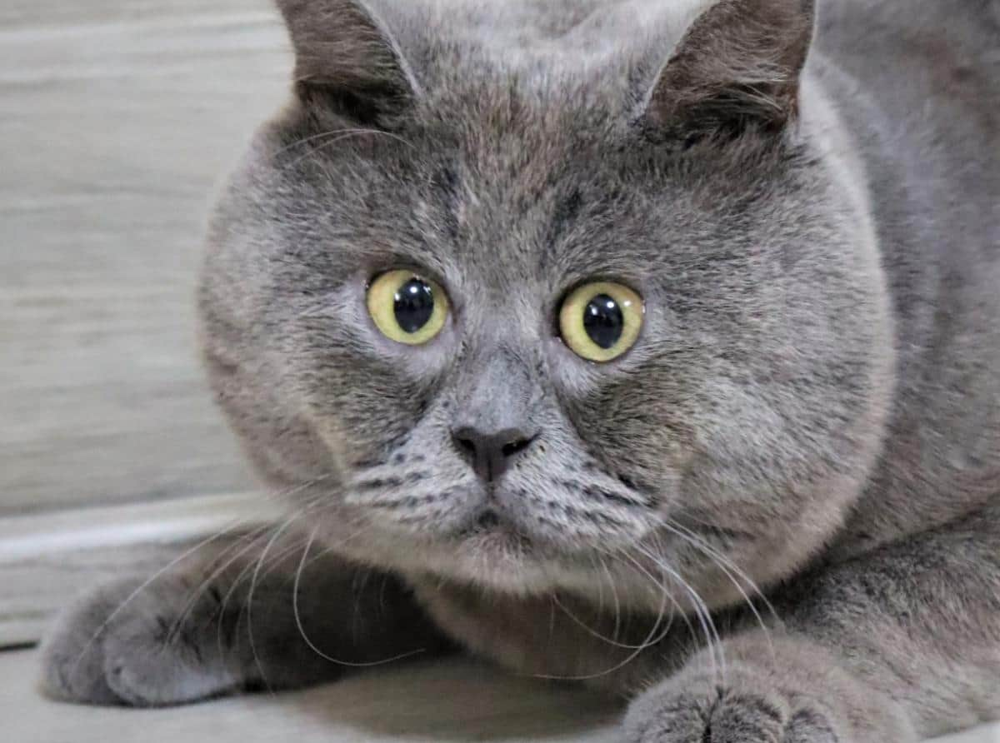
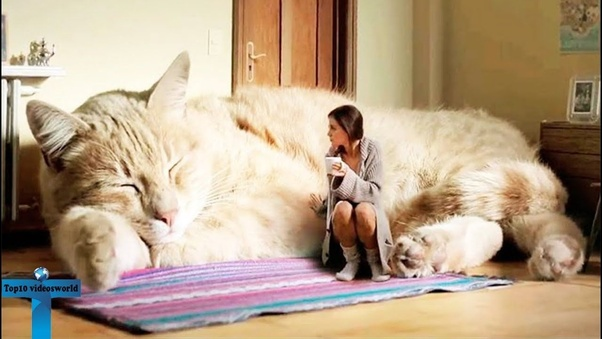

Кот породы мейн-кун по кличке Руперт весит около 9 кг. По всей видимости, Руперт является самым крупным, но не самым толстым котом в мире. Хоть мейнкуны и так известны своими огромными размерами, некоторых представителей этой породы можно назвать настоящими великанами.
Узнать большеМеждународным Днём кошек является 8 августа. В России День кошек также празднуют 1 марта. Кошки в России — один из символов весны, а март традиционно считается «кошачьим» месяцем.
Ежегодно 8 августа отмечается всемирный день кошек - праздник, посвященный одному из самых популярных видов домашних животных.
Вчера вечером Федя вернулся домой. О том, где же он всё это время пропадал, Федя решил не говорить.
В этой подборке будут представлены самые крупные породы котов на планете, с указанием среднестатистических данных высоты и длины тела взрослых особей.
